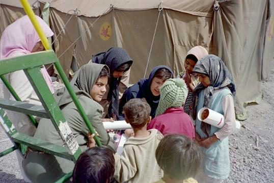

از روزی که دلارام را در «خانه کودک» پامنار دیدم نزدیک به دو سال می گذرد.می دانستم که دلارام در آنجا به طور داوطلبانه یک سال است که برای "کودکان کار" کار می کند و از او خواسته بودم یک روز به دیدنش بروم تا ببینم در کدام بخش آنجا می توانم کمک کنم.
آن روز اولین بار بود که دلارام را در برخورد با بچه های آنجا می دیدم و واقعا مرا بهت زده کرده بود.من همیشه ترسی از برخورد مستقیم با این کودکان داشتم چون نمی دانستم تا کجا باید حدود را نگه داشت و از طرف دیگر می دانستم که ترحم آفتی است برای این کودکان و دلارام به من به طور عملی این چیزها را یاد داد.

دلارام بهترین و موثرترین مددکاریست که می شناسم و، کودکان محروم پامنار چنان عاشق او بودند که شخصی ترین مشکلاتشان را فقط با او در میان می گذاشتند.
در این دو سال، دوستی من و دلارام بیشتر و بیشتر شد تا جایی که امروز از نزدیکترین دوستانم است.
با این مقدمات می خواهم بگویم نوشتن راجع به دلارام بدون دخیل کردن احساسات برای من خیلی سخت است.
با این وجود سعی می کنم بدون آنکه ترحمی برای دلارام برانگیزم همان طور که او همیشه ازبرانگیختن ترحم نسبت به آدم ها بیزار بود،بنویسم.
چیزی که در دو روز گذشته فعالان کمپین یک میلیون امضاء را آشفته کرده است بهت زدگی از اجرای حکم سنگین و ناعادلانه دلارام است.زیرا که همه ما خوشبینانه انتظار چنین حکمی را نداشتیم و فکر می کردیم در دادگاه تجدید نظر تخفیف زیادی پیدا کند. در نتیجه، خبر ابلاغ این حکم به «اجرای احکام» همه ما را در شوک قرار داد.در صورتی که با نگاهی به وضعیت اخیر کشور و موج سرکوب ها باید حدس می زدیم که این تیغ سرکوب دامن جنبش زنان را هم بگیرد.و این تازه شروع جدی سرکوب خواهد بود.
جنبش دانشجویی در چند ماه اخیر، برای کاری که نکرده، هزینه های بسیار سنگینی را پرداخته است. در شهرستان ها و بخصوص شهرهای کردستان و آذربایجان تمامی فعالان مدنی تحت فشار هستند.روناک صفارزاده دختری هم سن و سال دلارام در سنندج به خاطر جمع آوری امضاء، نزدیک به یک ماه است که دستگیر شده و هنوز محل نگهداری اش معلوم نیست.
این خشم حکومت تا جایی پیش می رود که حتی مقاومت زهرا بنی عامری در امر به معروف و نهی از منکر را هم تاب نمی آورد و معلوم نیست چه بلایی سرش آورده اند و علت مرگش چه بوده است.
دلارام اولین قربانی این موج سرکوب جنبش زنان در تهران است.اتفاقا سوژه خوبی هم است، زیرا که عکسهای مورد ضرب و شتم قرار گرفتنش در میدان هفت تیر بیشترین هزینه را برای حکومت داشته است از طرف دیگر همه می دانیم که دلارام دختری است که هیچ گاه از خواسته های به حق خود دست بر نمی دارد.همان طور که در دادگاه خود ابراز کرده همچنان اعتقاد دارد تجمع میدان هفت تیر، قانونی بوده است و بعد از این هم در تجمعات قانونی شرکت خواهد کرد.
دلارام از خرداد سال 85 که دستگیر شد تا امروز که نزدیک به 16 ماه می گذرد ذره ای از حجم فعالیت خود کم نکرده است. جای کسانی مثل دلارام در زندان است! دلارام نه تنها فعال جنبش زنان است بلکه فعال دانشجویی هم هست و در چند حوزه تاثیر گذار، در نتیجه تحمل چنین شخصی واقعا برای این سیستم حکومتی باید سخت باشد . و سیستم بسته و مردسالار حکومت چنین آدمهایی را نمی تواند تاب بیاورد.
چیزی که باعث سردرگمی فعالان جنبش زنان در مقابل چنین حکمی می شود قرار گرفتن در مقابل یک دوراهی است:
اگر عکس العملی شدید به این حکم نشان بدهی یعنی به خواسته حکومتگران نزدیک می شوی و به سمت رادیکال شدن و در نهایت سرکوب شدید و فلج شدن پیش می رویم.اگر عکس العملی شدید نشان ندهی یعنی پذیرفته ای و خود باعث مرگ خود می شوی و چه بسا حکم های بعدی هم پشت سر هم به همین صورت بیایند و حکم دلارام که سنگین ترینشان بوده است حساسیت ها را می کاهد.
البته این، از نگاه آنانی است که برنامه ریزی می کنند.ولی آنها خیلی چیزها را نمی بینند.آنها این همه زن و مردی که هر روزه بیانیه کمپین یک میلیون امضا را با علاقه و شادابی امضا می کنند نمی بینند.آنها کودکان بم و یا جنوب شهری تهران را که عاشق دلارام هستند و از او یاد گرفته اند در مورد همه چیز خوب فکر کنند را نمی بینند.آنها خیلی چیزها را نمی بینند.قدرت آدمها را کور می کند و همه قدرت ها دقیقا یک راه تکراری را پیش می روند.همیشه همه قدرت ها وقتی تحت فشار بیشتری قرار می گیرند فشار بیشتری هم وارد می کنند.
فشار های خارج از ایران چنان راه تنفس را برایشان بسته است که حتی یک صدای ضعیف هم در داخل باید خفه شود.
این سرکوب ها هست و ما مجبوریم با آنها کنار بیاییم و به مبارزه مان ادامه بدهیم و هزینه ها را تحمل کنیم برای آنچه که ما دلارام ها به آن اعتقاد داریم ولی آیا فکر ما را هم می توانید سرکوب کنید؟آیا فکر دلارام را می توانید زندانی کنید؟نه!فکر او آزادتر از این حرفهاست.
آقایان برنامه ریز، شما به هر حال بازی را باخته اید چون یک طرف بازی افکاری هستند که هیچ گاه زندانی نمی شوند و به سرعت تکثیر می شوند، البته ممکن است بتوانید به طور مقطعی کالبد فیزیکی این افکار را زندانی کنید یا منفعل کنید و دیگر نبینیدشان ولی اعتقادات و آرمان های ما هر روز قوی تر می شوند و ما با این فشار ها هرروز مطمئن تر از قبل، مبارزه خواهیم کرد.
Archives

Comments
doorood bar in hame daghdaghe baraye vatan va mobareze ba hookoomate jor be omide piroozi dar in rah va etehad
Posted by: kourosh | November 6, 2007 11:21 AM
doorood bar in hame daghdaghe baraye vatan va mobareze ba hookoomate jor be omide piroozi dar in rah va etehad
Posted by: kourosh | November 6, 2007 11:21 AM
doorood bar in hame daghdaghe baraye vatan va mobareze ba hookoomate jor be omide piroozi dar in rah va etehad
Posted by: kourosh | November 6, 2007 11:21 AM